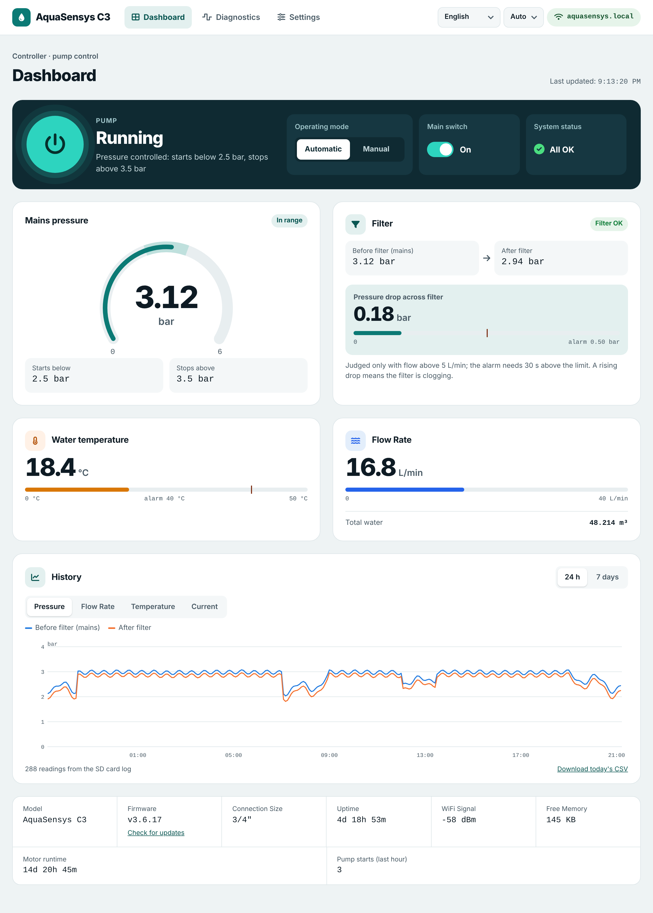
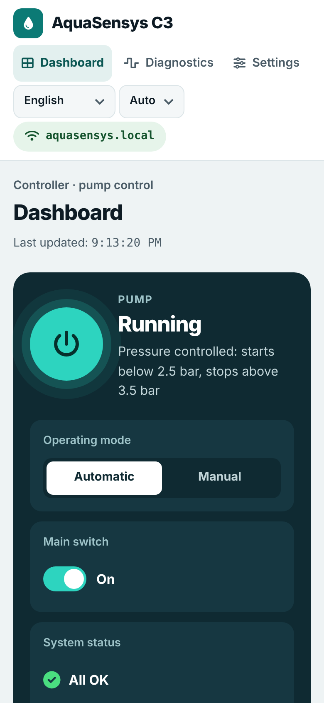
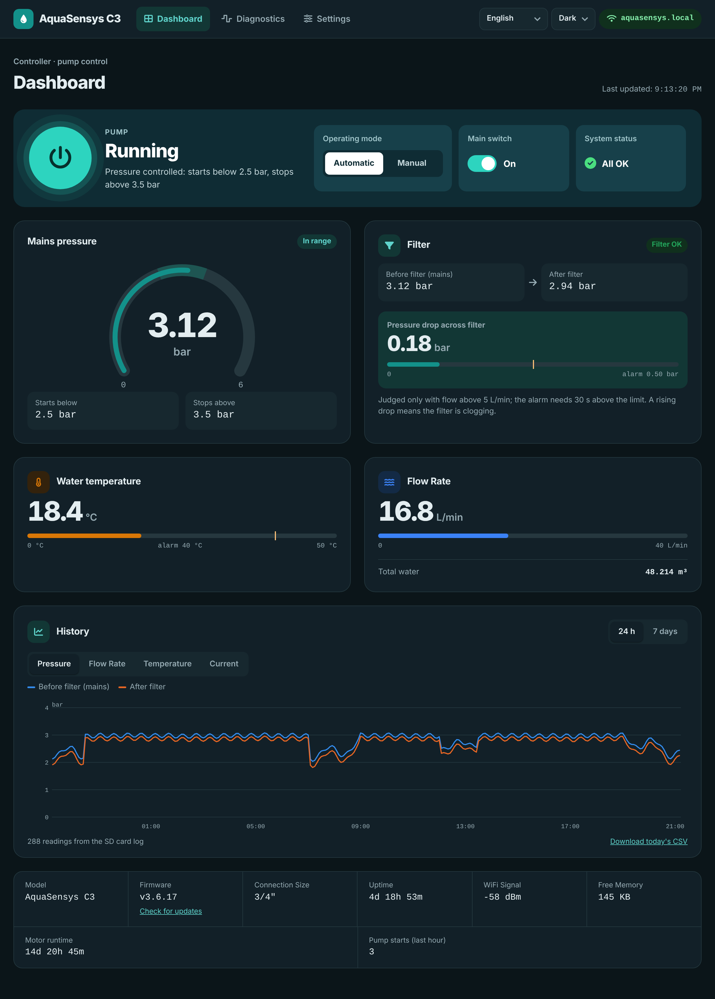
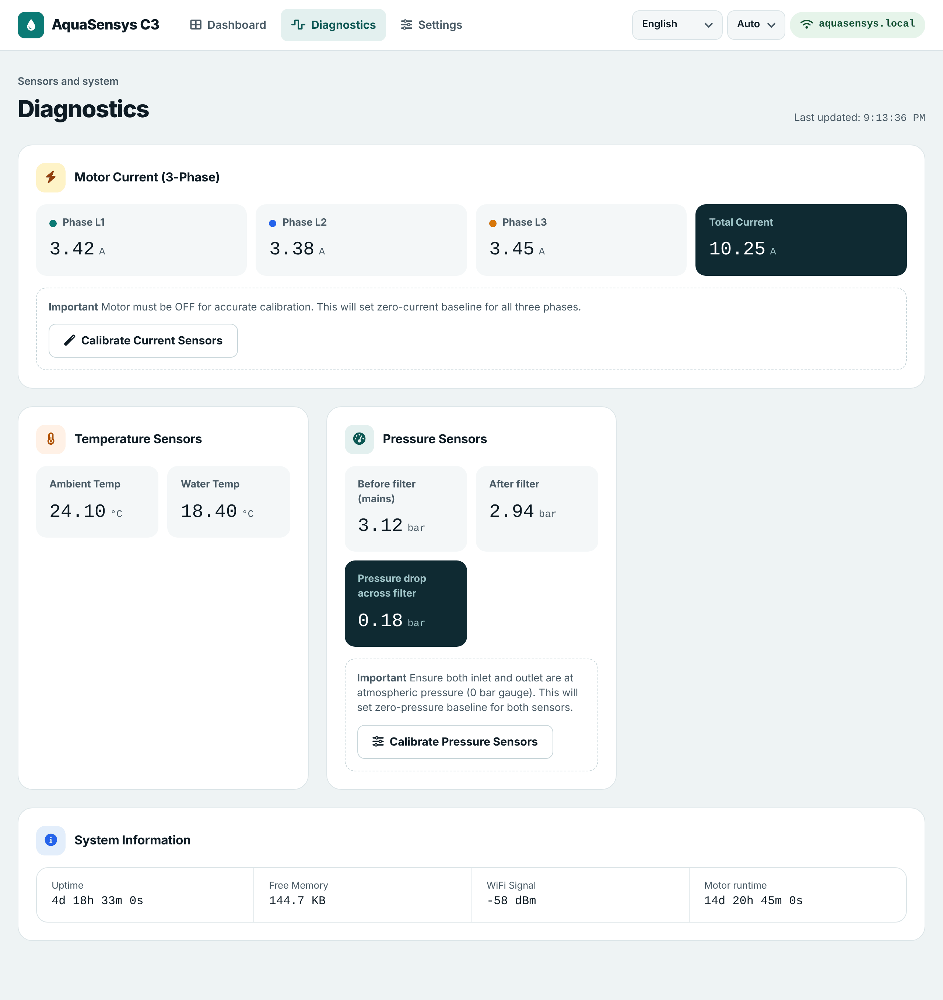
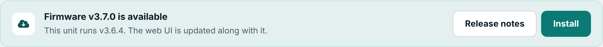
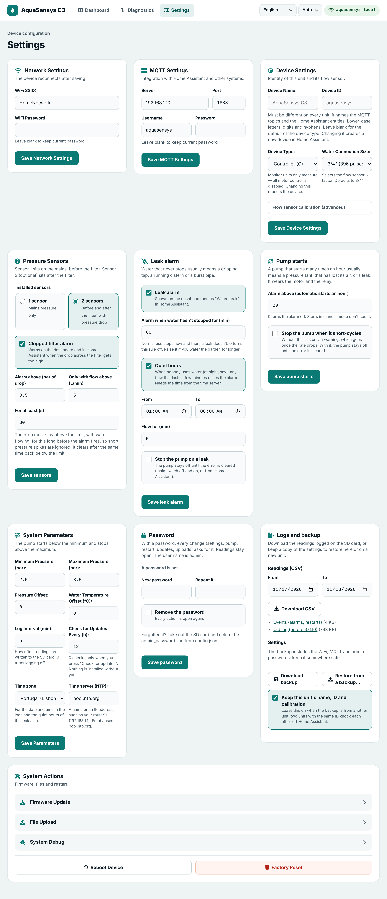
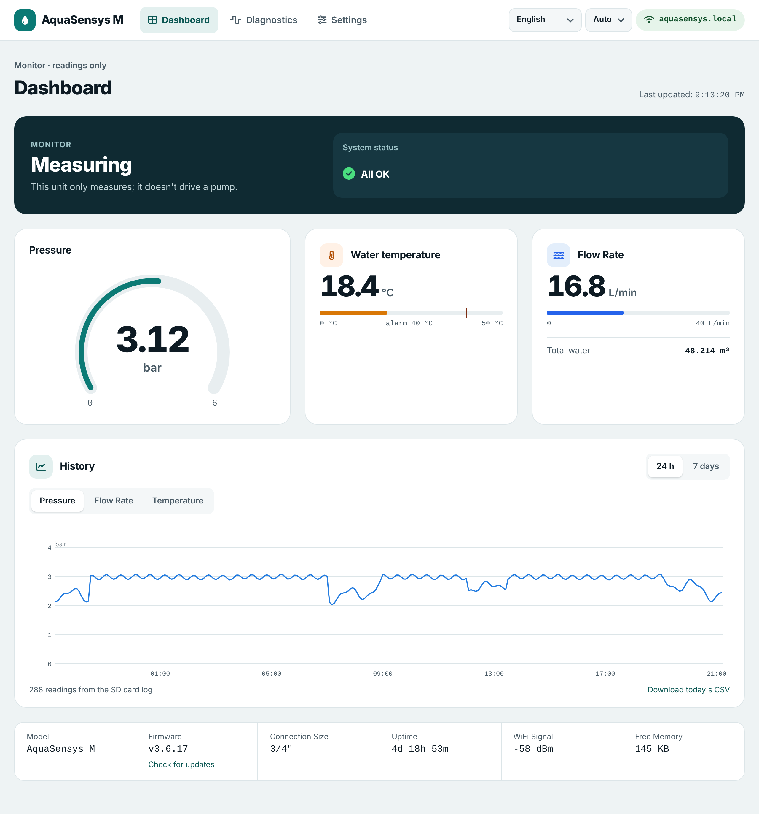

Leituras em tempo realLive readings
Pressão, caudal e temperatura da água atualizados a cada segundo, em qualquer browser da sua rede.Pressure, flow and water temperature updated every second, in any browser on your network.
Monitor e controlador de abastecimento de águaWater supply monitor and controller
Pressão, caudal, temperatura e corrente da bomba em tempo real, no telemóvel, no computador e no Home Assistant. E proteção automática para a bomba antes que algo corra mal. Pressure, flow, temperature and pump current in real time, on your phone, your computer and in Home Assistant. Plus automatic protection for the pump before anything goes wrong.

Uma bomba de furo ou sobrepressora avaria quase sempre sem avisar: trabalha a seco, sobreaquece, perde uma fase ou o filtro entope. Normalmente só se dá por isso quando as torneiras secam. O AquaSensys vigia o sistema por si. A well or booster pump almost always fails without warning: it runs dry, overheats, loses a phase or the filter clogs. Usually nobody notices until the taps run dry. AquaSensys watches the system for you.
FuncionalidadesFeatures
Pressão, caudal e temperatura da água atualizados a cada segundo, em qualquer browser da sua rede.Pressure, flow and water temperature updated every second, in any browser on your network.
Desliga a bomba em funcionamento a seco, sobrecorrente, desequilíbrio de fases e pressão fora dos limites.Stops the pump on dry running, overcurrent, phase imbalance and out-of-range pressure.
Com um segundo sensor de pressão, mede a perda de carga no filtro e avisa quando é altura de o trocar.With a second pressure sensor, it measures the drop across the filter and warns you when it's time to change it.
Aparece sozinho via MQTT, com sensores, interruptores e alarmes prontos para painéis e automações.Shows up on its own via MQTT, with sensors, switches and alarms ready for dashboards and automations.
Mede a corrente do motor fase a fase e conta as horas de funcionamento da bomba.Measures motor current phase by phase and counts the pump's running hours.
Novas versões aparecem no painel e instalam-se com um clique, verificadas antes de serem aplicadas.New versions appear on the dashboard and install with one click, verified before they're applied.
Em qualquer ecrãOn any screen
Abra aquasensys.local em qualquer dispositivo da casa. A interface adapta-se ao ecrã, está em português e inglês e tem tema claro e escuro, que segue o seu dispositivo.Open aquasensys.local on any device at home. The interface fits any screen, comes in English and Portuguese, and has a light and a dark theme that follows your device.


DiagnósticoDiagnostics
Corrente em cada fase do motor, temperatura da água e ambiente, pressão antes e depois do filtro. A calibração dos sensores faz-se aqui, com um clique.Current on each motor phase, water and ambient temperature, pressure before and after the filter. Sensor calibration is done here, with one click.

AtualizaçõesUpdates
O AquaSensys procura novas versões duas vezes por dia. Carregue em Instalar no painel ou no Home Assistant e ele descarrega, verifica, atualiza e reinicia sozinho. Se algo falhar, continua com a versão que tinha.AquaSensys looks for new versions twice a day. Press Install on the dashboard or in Home Assistant and it downloads, verifies, updates and restarts on its own. If anything fails, it keeps the version it had.

ConfiguraçãoSettings
WiFi, MQTT, limites de pressão, sensores e alarmes. Nada precisa de ser reprogramado.WiFi, MQTT, pressure limits, sensors and alarms. Nothing needs reprogramming.

ModelosModels
Os dois modelos usam o mesmo firmware. Um Monitor pode passar a Controlador mais tarde, só com uma definição.Both models run the same firmware. A Monitor can become a Controller later with a single setting.
Controlo completoFull control
Controlador: substitui o pressostato, comanda e protege a bomba.Controller: replaces the pressure switch, drives and protects the pump.
Só mediçãoMeasurement only
Monitor: para sistemas que já têm controlo próprio, ou para vigiar uma segunda linha.Monitor: for systems that already have their own control, or to watch a second line.

Proteção da bomba (C3)Pump protection (C3)
Ao detetar uma falha, o AquaSensys desliga a bomba de imediato e mantém-na parada até alguém verificar o sistema. As falhas elétricas continuam ativas mesmo em modo manual.When it detects a fault, AquaSensys stops the pump straight away and keeps it stopped until someone checks the system. Electrical faults stay active even in manual mode.
Primeiros passosGetting started
Sensores de pressão, caudal e temperatura na linha de água; no C3, também o contactor e os sensores de corrente da bomba.Pressure, flow and temperature sensors on the water line; on the C3, also the pump contactor and current sensors.
Sem WiFi configurado, cria a sua própria rede AquaSensys-…. Ligue-se e abra 192.168.4.1.With no WiFi set up, it creates its own network, AquaSensys-…. Connect and open 192.168.4.1.
Indique a sua rede WiFi e, se quiser, o broker MQTT do Home Assistant.Enter your WiFi network and, optionally, your Home Assistant MQTT broker.
Abra aquasensys.local, ajuste os limites de pressão e está pronto.Open aquasensys.local, set the pressure limits and you're done.
EspecificaçõesSpecifications
Fale connosco para saber preços, disponibilidade e qual o modelo certo para a sua instalação.Get in touch for pricing, availability and which model suits your installation.